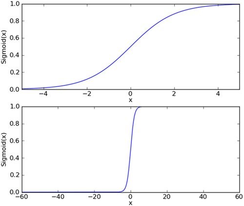
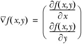
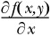
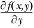
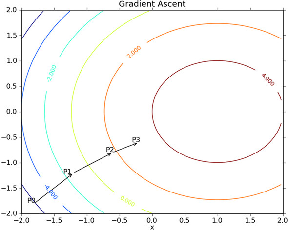
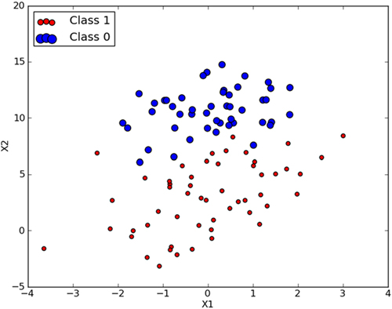

Logistic回归是一个最优化算法，比如如何在最短时间从A点到达B点？
回归：假设我们有一些数据点，我们用一条直线对这些点进行拟合（该线称为最佳拟合直线），这个拟合过程就叫做回归。
根据现有的数据对分类边界线建立回归公式，依次进行分类。这里的“回归”一次源于最佳拟合，表示要找到最佳拟合参数集。
Logistic回归的一般过程：
- 收集数据
- 准备数据：由于需要进行距离计算，因此数据类型必须为数值型，另外结构化数据格式最佳
- 分析数据
- 训练算法：大部分时间将用于训练，训练的目的是为了找到最佳的分类回归系数
- 测试算法
- 使用算法：首先，需要输入一些数据，并将其转换成对应的结构化数值；接着，基于训练好的回归系数就可以对这些数值进行简单的回归计算，判定它们属于哪个类别；在这之后，我们就可以在输出的类别上做一些其他分析工作
基于Logistic回归和Sigmoid函数的分类
logistic回归
优点：计算代价不高，易于理解和实现
缺点：容易欠拟合，分类精度可能不高
适用数据类型：数值型和标称型数据
首先我们需要一个阶跃函数（step function），Sigmoid函数，它的值域在0-1之间：
$$\sigma(z)=\frac{1}{1+e^{-z}}$$
下图给出了sigmoid函数在不同坐标尺度下的两条曲线图。
为了实现logistic回归分类器，我们可以在每个特征上都乘以一个回归系数，然后把所有的结果值相加，将这个总和带入sigmoid函数中，进而得到一个范围在0~1之间的数值，任何大于0.5的数据被分入1类，小于0.5的即被归为0类，所以logistic回归也可以被看成一种概率估计。

两种坐标尺度下的sigmoid函数图，上图的横坐标为-5~5，这时曲线变化较为平滑.
基于最优化方法的最佳回归系数确定
sigmoid函数的输入记为z，由下面的公式得出：
$$z=w_0x_0+w_1x_1+w_2x_2+…+w_nx_n$$
如果采用向量写法，上述公式可以写成$Z=W^TX$，它表示将这两个数值向量对应元素相乘然后全部加起来得到z的值。其中的向量x是分类器输入的数据，向量w是我们需要求得的最佳系数（weight）。
梯度上升
梯度上升算法的思想是：要找到某函数的最大值，最好的方法是沿着该函数的梯度方向探寻。如果梯度记为$\nabla$，则函数$f(x,y)$的梯度由下式表示

这个梯度意味着要沿x的方向移动 ，沿y的方向移动 ，其中$f(x,y)$必须要在待计算的点上由定义并且可微。

梯度上升算法到达每个点后都会重新估计移动方向。从P0开始，计算完该点的梯度，函数就根据梯度移动到下一点P1，在P1点，梯度再次被重新计算，并且沿新的梯度方向移动到P2。如此循环迭代，直到满足停止条件。迭代的过程中，梯度算子总能保证我们选取到最佳的移动方向。
梯度上升算法沿梯度方向移动了一步，可以看到，梯度算子总是指向函数增长最快的方向，这里所说的是移动方向，而未提到移动量的大小，该量值称为步长，记作$\alpha$，用向量表示的话，梯度上升算法的迭代公式如下：
$$w := w+\alpha\nabla_wf(W)$$
该公式将一直被迭代执行，直到达到某个停止条件为止。
1 | 梯度下降算法 |
$$w := w-\alpha\nabla_wf(W)$$1
梯度上升算法用来求函数的最大值，而梯度下降用来求函数的最小值
接下来我们将对下面的数据集使用梯度上升的算法来进行分类，求出最佳回归系数。

训练算法：使用梯度上升找到最佳参数
上图有100个样本点，每个点包含两个数值型特征X1和X2。在此数据集上，我们将通过使用梯度上升法找到最佳回归系数，也就是拟合出logistic回归模型的最佳参数。
伪代码如下：
每个回归系数初始化为1
重复R次：
计算整个数据集的梯度
使用alpha × gradient更新回归系数的向量
返回回归系数
logistic回归梯度上升优化算法
1 | def loadDataSet(): |
1 | dataArr, labelMat = loadDataSet() |
loadDataSet()函数的作用是打开testSet.txt文件，逐行读取，每行的前两个值是X1和X2，第三个值是对应的类别标签，为了方便计算将X0设置为1.0
下面是sigmoid函数:
1 | def sigmoid(inX): |
1 | from tqdm import trange |
gradAscent()函数用来完成梯度上升算法的实现。
1 | weights = gradAscent(dataArr, labelMat) |
100%|██████████| 500/500 [00:00<00:00, 15757.40it/s]
matrix([[ 4.12414349],
[ 0.48007329],
[-0.6168482 ]])
分析数据：画出决策边界
上面已经解出一组回归系数，接下来画出分割线。
1 | import matplotlib.pyplot as plt |
我们设定$0=w_0x_0+w_1x_1+w_2x_2$，然后用解出X1和X2的关系式（其中X0=1），画出线段
1 | plotBestFit(weights) |

这个分类结果相当不错，看图可知只分错了两个点。
训练算法：随机梯度上升
梯度上升算法每次迭代都需要遍历整个数据集，如果有十亿样本和上千万特征，那么改方法的计算复杂度就太高了，一种改进方法是一次仅用一个样本来更新回归系数，该方法称为随机梯度上升算法。由于可以在新样本到来时对分类器进行增量式更新，因而随机梯度上升算法是一个在线学习算法。与在线学习相对应，一次处理所有数据被称作是“批处理”。
随机梯度上升算法可以写成如下的伪代码：
所有回归系数初始化为1
对数据集中每个样本
计算该样本的梯度
使用alpha×gradient更新回归系数
然会回归系数
1 | def stocGradAscent0(dataMatrix, classLabels): |
随机梯度上升算法和梯度上升算法代码很相似，有两点区别，第一，后者的变量h和error都是向量，前者全是数值；第二，前者没有矩阵转置过程，所有变量的数据类型都是numpy数组。
1 | weights = stocGradAscent0(array(dataArr), labelMat) |

观察上图发现有些欠拟合，梯度上升的算法迭代了500次，而这个结果只迭代了200次，所以还算不错了。
下图展示了随机梯度上升算法在二百次迭代过程中回归系数的变换情况。
1 | %run MLiA_SourceCode/machinelearninginaction/Ch05/plotSDerror.py |

和书上画的不一样，略过。
改进的随机梯度上升算法
1 | def stocGradAscent1(dataMatrix, classLabels, numIter=150): |
上面的程序改进有两处，1处改进会缓解数据波动或高频波动，虽然alpha会随迭代次数不断减小，但永远不会减小到0，这样做的原因是保证多次迭代后，新数据任然具有一定的影响。
2处改进通过随机选取样本来更新回归系数，这种方法将减小周期波动。
改进算法还增加了迭代次数作为第三个参数。
1 | %run MLiA_SourceCode/machinelearninginaction/Ch05/plotSDerror.py |

使用随机样本选择和alpha动态减少机制的随机梯度上升算法stocGradAscent1()所生成的系数收敛示意图。该方法比采用固定alpha的方法收敛速度更快。
1 | weights = stocGradAscent1(array(dataArr), labelMat) |

程序执行结果与gradAscent()差不多，但是计算量更少。
实例：从疝气病症预测马的死亡率
使用logistic回归预测患有疝病的马的存活问题。提供的数据有368个样本28个特征。
- 收集数据
- 准备数据：用python解析文本并填充缺失值
- 分析数据：可视化观察数据
- 训练算法：使用优化算法，找到最佳系数
- 测试算法：为了量化回归效果，需要观察错误率。根据错误率决定是否回退到训练阶段，通过改变迭代的次数和步长等参数来得到更好的回归系数
- 使用算法：实现简单的命令程序来收集马的病症并输出预测结果
准备数据：处理数据中的缺失值
当数据缺失时，可以用以下方法来解决这个问题：
使用可用特征的均值来填补缺失值
使用特殊值来填补缺失值，如-1
忽略有缺失值的样本
使用相似样本的均值来填补缺失值
使用另外的机器学习算预测缺失值
现在为了可以使用算法，我们要做两件事
第一，选择实数0来替换所有的缺失值，修改回归系数的更新公式
weights = weights + alpha × error × dataMatrix[randIndex]
这样做是为了当randIndex对应的特征值为0时，weights将不会更新
第二，如果在测试数据集中发现一条数据的类别标签已经缺失，简单的做法是将该条数据丢弃。
测试算法：用logistic回归进行分类
1 | def classifyVector(inX, weights): |
1 | multiTest() |
the error tate of this test is 0.268657
the error tate of this test is 0.373134
the error tate of this test is 0.343284
the error tate of this test is 0.328358
the error tate of this test is 0.313433
the error tate of this test is 0.298507
the error tate of this test is 0.417910
the error tate of this test is 0.328358
the error tate of this test is 0.283582
the error tate of this test is 0.373134
after 10 iterations the average error rate is: 0.332836
十次迭代后的平均错误率为33%，还算不错
总结
Logistic回归的目的是寻找一个非线性函数sigmoid的最佳拟合参数，求解过程可以由最优化算法完成。在最优化算法中，最常用的就是梯度上升算法，而梯度上升算法又可以简化为随机梯度上升。
随机梯度上升算法与梯度上升算法的效果相当，但占用更少的计算资源，并且，随机梯度上升算法是一个在线算法，它可以在新数据到来时就更新参数，而不需要重新读取整个数据集
如何处理缺失值，取决于实际中的需求。